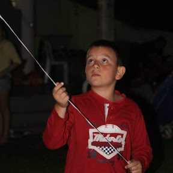

Portifolio Gustavo Barbosa.
Gustavo Barbosa, 17 anos, eu gosto muito de soltar pipa e jogar bola com meus amigos, e também tenho uma paixão por pesca, uma das minhas matérias favoritas e web e biologia.

Gustavo Barbosa, 17 anos, eu gosto muito de soltar pipa e jogar bola com meus amigos, e também tenho uma paixão por pesca, uma das minhas matérias favoritas e web e biologia.